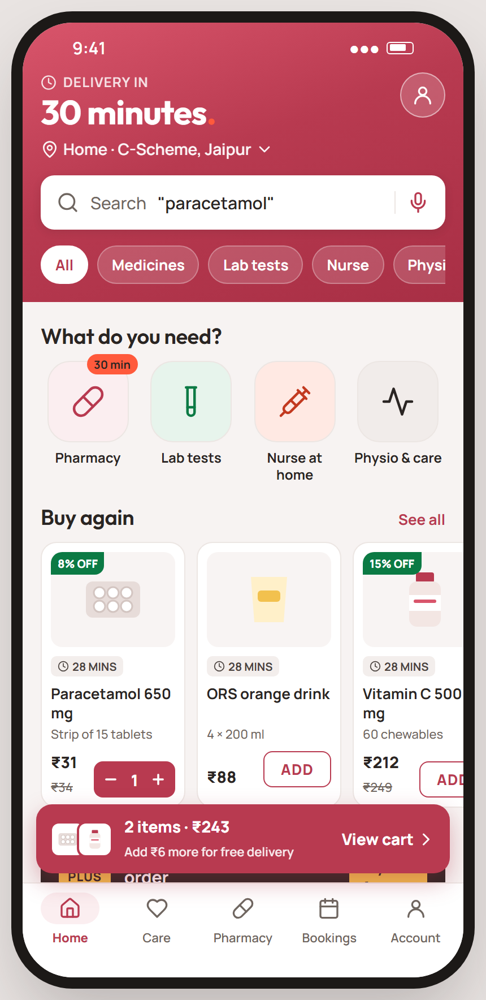
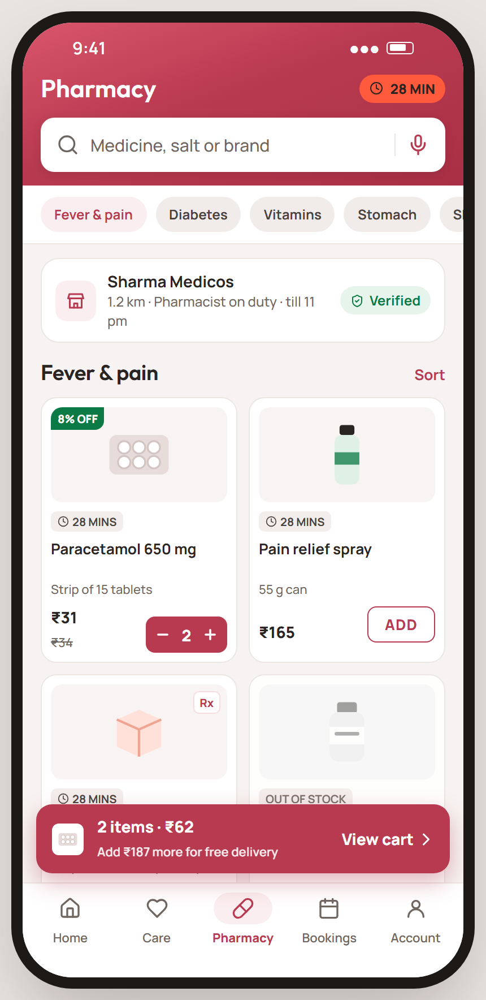
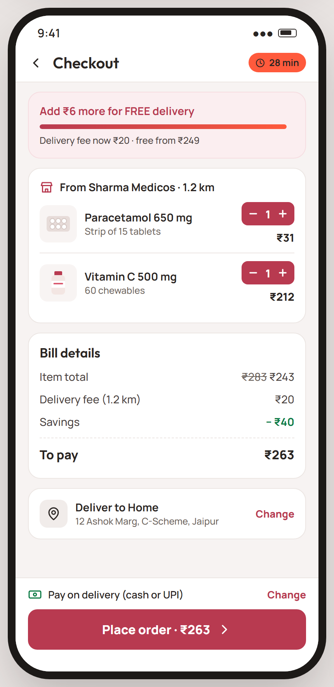
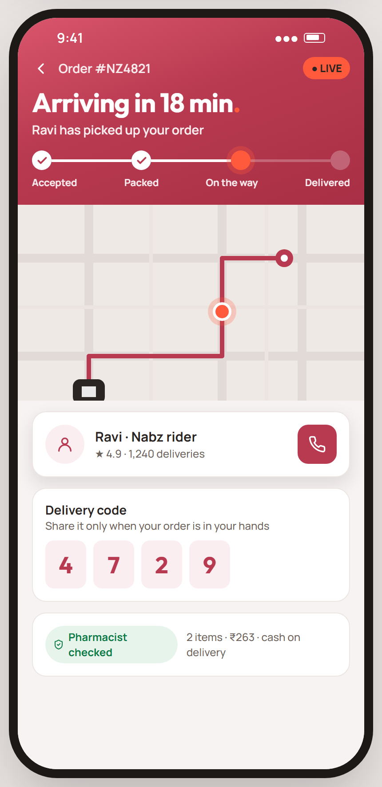
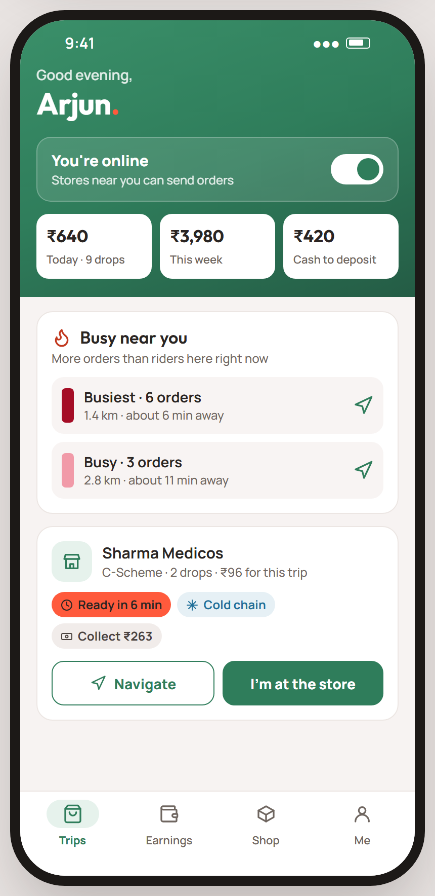
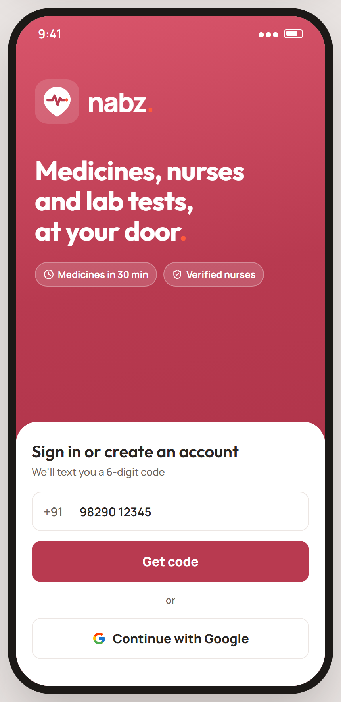
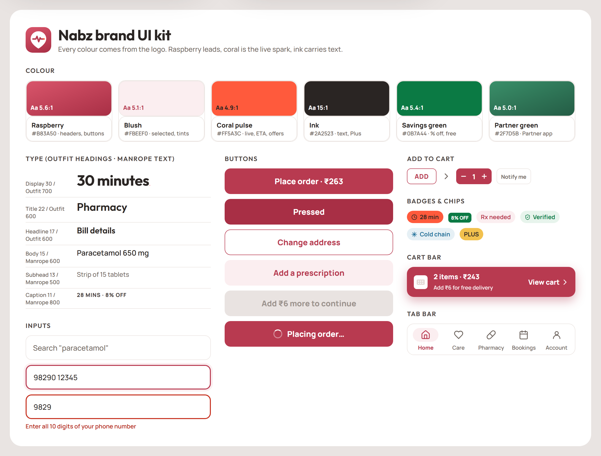

Nabz brand UI plan.
A bold, brand-coloured look for the Nabz and Nabz Partner apps. It follows the quick-commerce playbook: the logo colour fills the header, every button and badge has one job, and the cart is always one tap away. Proposal for approval, 2 November 2026.
What you'll get
Rendered mockups at phone size with real Nabz content. Each one shows the target, not the current app.






The kit
Colours, type, buttons, add-to-cart, badges, inputs, cart bar and tab bar. Every screen is built only from these.

Colour: one job each
Contrast is measured against the WCAG AA rule (4.5:1 for normal text).
| Colour | Use for | Never use for | Contrast |
|---|---|---|---|
Raspberry #B83A50 | Brand header, primary button, ADD / stepper, active tab, links, cart bar | Errors, decoration, large card fills | White on it 5.6:1 AA |
Blush #FBEEF0 | Selected chip, active-tab pill, soft buttons, delivery-code boxes | Page background | Raspberry on it 5.1:1 AA |
Coral pulse #FF5A3C | "Live", ETA badges, the full stop in headlines, the rider dot | Small text on white (3.1:1) | Ink on it 4.9:1 AA |
Ink #2A2523 | All text, the Plus banner | Buttons | On white 15:1 AA |
Muted #6F6660 | Secondary text (pack size, distance) | Anything that must be read first | On white 5.6:1 AA |
Savings green #0B7A44 | % OFF, savings, "free delivery", verified | Buttons in the customer app | White on it 5.4:1 AA |
Plus gold #F2C14E | Nabz Plus only | Anything else | Ink on it 9.0:1 AA |
Partner green #2F7D5B | Partner app: header, primary button, active tab | The customer app | White on it 5.0:1 AA |
Warm neutral #F7F3F2 | Page background under white cards | Text | — |
#B42318) with an icon and a sentence, so "something went wrong" never looks like "tap here".Type, spacing and shape
| Token | Value | Where |
|---|---|---|
| Display | Outfit 700 · 30 | Header promise ("30 minutes."), tracking time, partner greeting |
| Title | Outfit 600 · 22 | Screen titles |
| Headline | Outfit 600 · 17–19 | Section titles, card titles |
| Body | Manrope 600 · 15 | Product names, list rows, buttons (800) |
| Subhead | Manrope 500 · 13 | Pack size, distance, helper text |
| Caption | Manrope 800 · 11, caps | Badges: 28 MINS, 8% OFF, Rx |
| Spacing | 4 · 8 · 12 · 16 · 20 · 24 · 32 | 16 is the screen edge; gaps between cards 10–12 |
| Radius | 8 · 12 · 16 · 28 | Badges and ADD 8, buttons and inputs 12, cards 16, sheets 28 |
| Elevation | hairline · raised · floating | Cards use a 1 px line; the cart bar and rider card float with a soft brand-tinted shadow |
| Touch target | ≥ 44 px | The ADD button is drawn at 32 px tall but its hit area is padded to 44 |
Components
- Button: primary (raspberry), secondary (outline), quiet (blush), destructive, partner. Sizes sm, md, lg. Pressed (deeper raspberry), disabled (grey, with the reason in its label, e.g. "Add ₹6 more to continue") and loading (spinner plus "Placing order…").
- Add / Stepper: ADD outline turns into a filled − 1 + stepper. A light haptic on each tap; the count animates; Notify me when out of stock.
- Brand header: logo-gradient band with status-bar padding, the promise line, address picker, search and optional chips. Customer app only.
- Cart bar: floats above the tab bar whenever the cart has items. Thumbnails, count, total, and progress to free delivery.
- Product card: image tile, discount ribbon, delivery-time badge, name (2 lines max), pack size, price with MRP struck through, Add.
- Chips and badges: ETA (coral), % OFF (green), Rx (raspberry outline), Verified (green), Cold chain (blue), Plus (gold).
- Inputs: 50 px tall, raspberry focus ring, errors in words under the field.
- Tab bar: icon plus label; the active tab gets a blush pill and raspberry label (green in the Partner app).
- Loading and empty states: shimmer placeholders in the card's shape instead of full-screen spinners; empty states with one line and one action.
Screen by screen
| Screen | Change |
|---|---|
| Welcome, sign in, phone code | Brand screen with the logo; sign-in on a white sheet; Google as secondary |
| Home | Brand header with promise, address and search; four service icons; Buy again; Plus; cart bar |
| Pharmacy, search, product | Compact brand header; category chips; verified store card; 2-column product grid; Rx and stock states |
| Cart and checkout | Free-delivery progress, steppers, bill with savings, address, payment, big amount button |
| Order tracking | Live header with time and steps; map; rider card; delivery code |
| Care, labs, nurse booking | Same header pattern; provider cards with rating and price; time-slot chips |
| Bookings, account, addresses | White app bar (no brand band); grouped list rows instead of one card per row |
| Partner: rider, nurse, store, lab | Partner-green header with online switch and earnings; job cards with state chips; green primary buttons |
| Website (follow-up) | The same tokens mirrored in frontends/web/app/globals.css, so web and app match |
Rollout
Update lib/theme.ts to the logo palette with a Partner palette chosen by APP_VARIANT; add the type ramp and spacing scale; keep the existing names so every screen picks up the new colours at once.
Button variants, Add/Stepper, BrandHeader, CartBar, ProductCard, Chip and a Text component in lib/marketUI.tsx, each with pressed, disabled and loading states and accessibility labels.
Welcome, home, pharmacy, cart, checkout, tracking, then care and labs. Replace the 49 hand-built buttons and the hard-coded colours as each screen is touched.
Rider, nurse, store and lab tabs in Partner green; the earnings and online header.
Mirror the tokens in the web CSS so the website and app match.
Type-check, the app's unit tests, screenshots of every screen on the Android emulator (light and dark), contrast checks, then new APKs.
Decisions for you
- Brand colour: switch to the logo's raspberry (recommended), or keep the current bright red and recolour the logo to match?
- Partner app: use Partner green, as in the mockup and its icon, or the same raspberry as the customer app?
- Home layout: four service icons (shown), or bigger tiles with a line of description each?
Once you choose, phases 1–2 change the whole app's look in one go; phases 3–6 refine each screen.